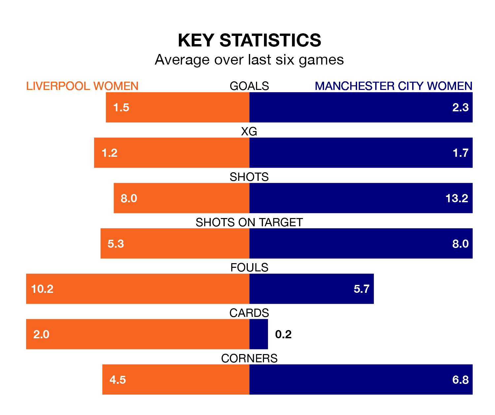

Two of the FA Women's Super League's top sides face each other at Prenton Park in Saturday lunchtime's kick-off, when fourth-placed Liverpool Women host second-placed Manchester City Women.
Liverpool have picked up eight wins and five draws from 17 games so far this season, and sit 14 points below the visitors going into the 12.30pm match.
City, meanwhile, have won 14 and drawn one, picking up 43 points.
Liverpool are in reasonable form in the FA Women's Super League, with three wins and two draws from their last six games.
With six wins and no losses over that period, Manchester City's form is much better – they have taken 18 points from 18, compared to the hosts' 11.
With 45 goals in 17 games so far this season, City are the league's second-highest scorers with 2.6 goals per game. And they are conceding fewer than average, letting in 11 goals at a rate of 0.6 per game.
Liverpool, meanwhile, are below average scorers, with 1.5 goals per game, compared to a league average of 1.6. They have conceded 1.2 goals per game.
In Khadija Monifa Shaw, the away team have the league's most on-form striker so far this season. She has notched 17 goals in 16 appearances.
Her goal rate of one every 74 minutes is much quicker than that of Sophie Roman Haug, Liverpool's top scorer with a goal every 239 minutes, and a total of five goals in 15 games.
In the last 10 years, Liverpool and Manchester City have played each other on 23 occasions. Liverpool won four of them, Manchester City 17, and they drew twice.
On average, Liverpool scored 0.7 goals and City 2.0 in those matches.
Their last meeting was on January 21, when Manchester City won 5-1 at home.
Liverpool's last match was on Sunday, a 0-0 draw against Everton Women.
Manchester City beat Manchester United Women 3-1 last time out, on March 23, with Jessica Park (two) and Shaw on the scoresheet.
Updated: 12:16 (UTC), 25/03/24